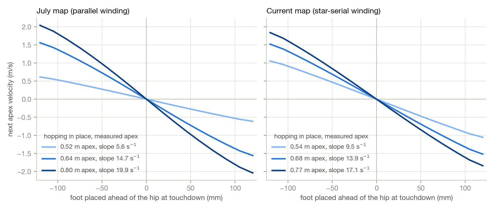
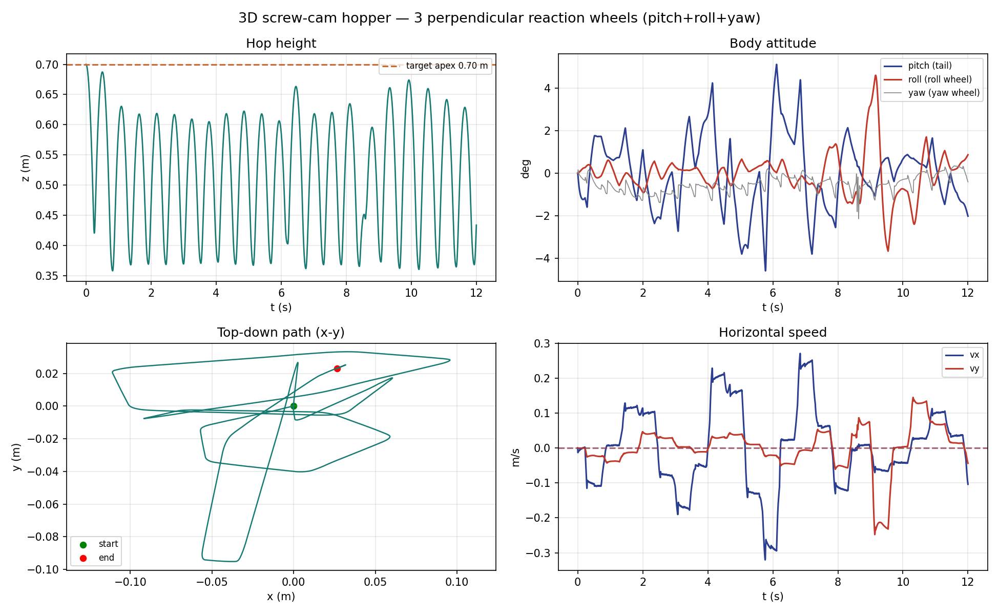
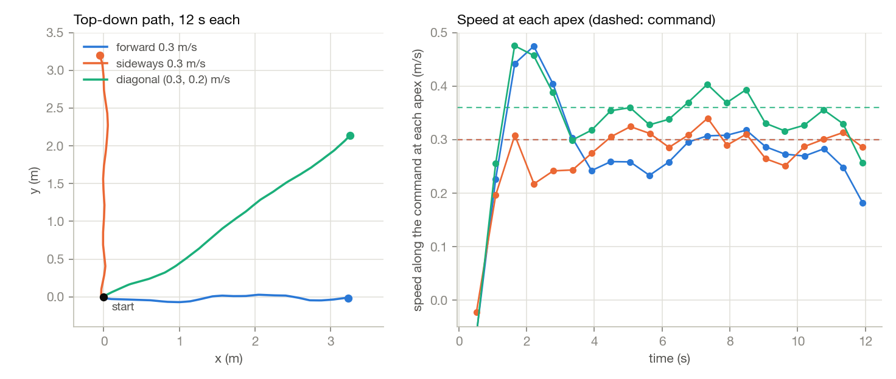
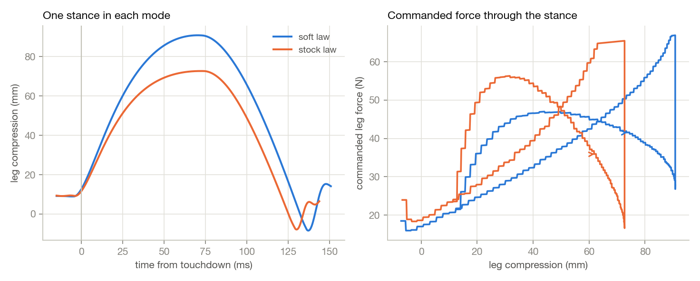
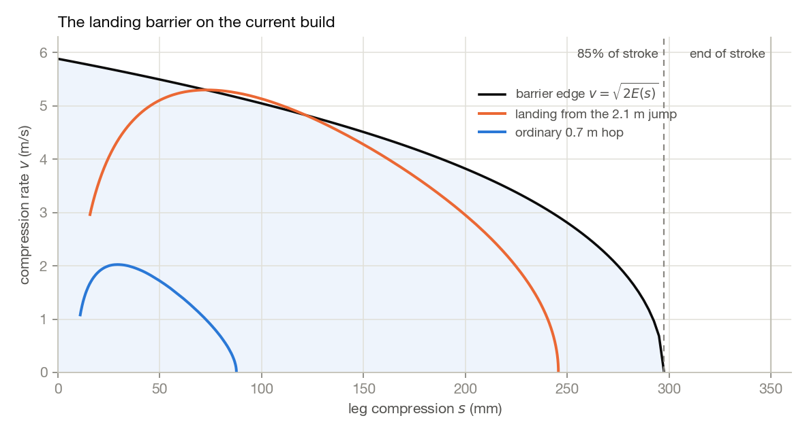
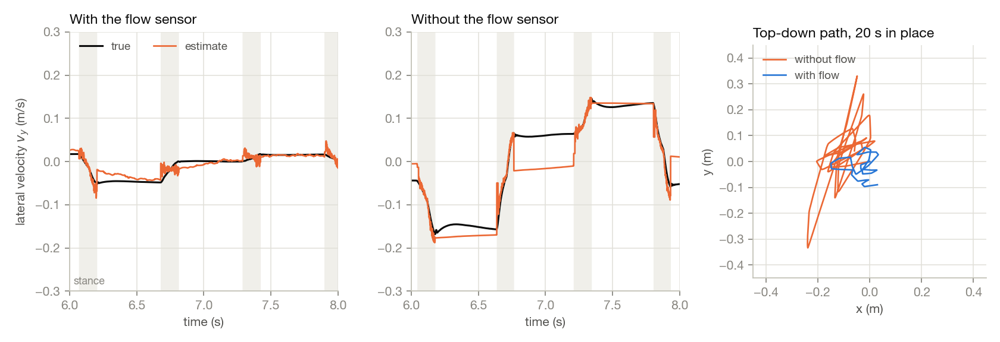

At the end of the last post the hopper was a set of promising plots: a variable-pitch screw, a motor that can throw 900 grams several meters up, and a control board built around failure handling. Before any of it reached the machine shop, it had to hop, steer and land without drama, and simulation is where crashes are free.
None of this has touched a real floor yet, but the controller tuned here is, tick for tick, the one that will: the C++ port for the Teensy replays a 16,000-tick episode to within a trillionth of the Python controller's outputs.
MuJoCo steps the robot every 0.1 ms. The controller never sees that state. A sensor model hands it a copy that is 1.5 ms old, with quantized encoders, noise and slowly drifting biases, sampled at 1 kHz. A contact-aided estimator turns the measurements into position and velocity, the controller outputs one torque per body axis plus one for the screw motor, and an allocator splits the three axis torques across the three wheel motors.
The constants below are for the star-serial winding of the ILM-E50x14 leg motor (preset ilm_x14ser, 0.920 kg launched). The July runs used the parallel winding of the same motor; where that changes a number I give both.
The controller is a two-phase state machine keyed on a foot switch, which in simulation is a touch sensor that reads closed above 5 N. The raw switch has to disagree with the current phase for 2 ms before the phase changes. Without that debounce, one noisy tick mid-push fires a false liftoff, the flight logic brakes the screw, the aborted push unloads the foot, and the false reading comes true.
firm_vz (2.9 m/s stock, 4.2 m/s soft), or the last apex was more than 0.22 m low.In flight the wheels aim the body and the leg holds near full extension; in stance the wheels despin and the leg runs one of three stance laws. Past 1 rad of roll or pitch the robot counts as fallen, so the leg command goes to zero and any pending jump is cancelled.
The body is a free 6-DOF torso, 0.920 kg launched: 0.394 kg of torso, 0.110 kg of leg, a 37 g foot, 18 g of rotor and three 120 g wheels. The leg is rigid with the body and only extends: a prismatic joint along the body's −z axis with 350 mm of stroke, 450 mm long at full extension, with no spring or damper. The foot is a 12 mm sphere with a friction coefficient of 1.0 and a point contact, which has no torsional friction, so the ground can't take any yaw torque from the robot.
The screw is a hinge on the leg axis with 1.39×10−5 kg·m2 of spin inertia: the motor rotor (9.30×10−6) plus the screw (4.60×10−6, from the CAD). The cam is a MuJoCo joint equality that ties the leg joint to the screw angle through a quartic:
\[ x_{\text{leg}}(\theta) = c_0 + c_1\theta + c_2\theta^2 + c_3\theta^3 + c_4\theta^4 \]One quartic can be 30% off in transmission ratio on an aggressive cam, so the profile is five quartic pieces matched in value and slope at the knots, each its own equality constraint, and the simulation loop sets eq_active every step so only the piece under the current screw angle is enforced. A tiny rotor drives a kilogram-scale load through that constraint, so it's stiff (0.2 ms time constant), hence the 0.1 ms timestep.
The constrained dynamics produce the varying ratio \(k(\theta) = dx/d\theta\) and the reflected inertia on their own. For a vertical push with body mass \(m\), spin inertia \(j\) and motor torque \(\tau\), the leg obeys
\[ (j + m k^2)\,\ddot\theta + m\,k\,k'\,\dot\theta^2 + m g k = \tau \]and one of my first checks was MuJoCo's full-torque push against a hand integration of this equation. On the star-serial cam \(k\) runs from 8.9 mm/rad at full compression to 28.6 mm/rad at full extension, so the rotor's reflected mass \(j/k^2\) falls from 174 g to 17 g. The screw motor is clamped every tick to its envelope: 1.72 N·m up to 256.4 rad/s, falling linearly to zero at 394.7 rad/s when driving with the spin. Braking gets the full 1.72 N·m at any speed, because the back-EMF helps the current when the drive regenerates.
Each wheel is a 120 g rim at 45 mm radius, \(I_s = m r^2 = 2.43\times10^{-4}\) kg·m2, centred 52 mm from the leg axis, with a ±0.55 N·m motor and its axis taken from the allocation matrix below. The torso renders as a cube standing on one corner, but its inertia is set separately (2.0, 2.0 and 1.2×10−3 kg·m2).
The earlier design steered with a big inertial tail for pitch and two reaction wheels for roll and yaw. The tail is a propeller-sized part with its own motor sizing, and every asymmetric mass hanging off the body pulls the center of mass off the leg axis.
I replaced all of it with three identical wheels arranged like the Cubli balancing on its corner. Tilted so their spin axes are mutually orthogonal, they make an orthonormal allocation matrix whose inverse is its transpose, and the attitude controller didn't change at all: it still commands virtual pitch, roll and yaw wheels and never learns the tail is gone. The symmetry puts the center of mass back on the leg axis by construction, and the shopping list drops to one wheel motor SKU.
The triad isn't free. A pure pitch command splits across two tilted wheels at 0.71 of full strength each, and the wheels' stored momentum sits on tilted axes, so body rotation turns it into a gyroscopic disturbance torque. Uncorrected, that kills sustained sideways hopping above about 0.35 m/s, so the allocator cancels it using wheel telemetry.
The surprise was mechanical: the triad's stability comes from wheel inertia rather than motor torque. A solid-disk wheel falls over, while a rim-loaded wheel of exactly the same mass, storing roughly twice the inertia per gram, hops all afternoon. The first spec was a 42-gram rim at 52 mm radius, with 0.55 N·m and about 700 rad/s at the motor. The ILM leg motor grew it to a 120-gram rim at 45 mm and a 900 rad/s cap.
The spin axes are the outward normals of the cube faces that meet at the bottom corner, where the screw passes through. With \(\beta = \arccos(1/\sqrt3) = 54.74^\circ\) and azimuths \(\varphi_i\) of 0°, 120° and 240°, the axes form the columns of
\[ W = \begin{bmatrix} \sin\beta\cos\varphi_i \\ \sin\beta\sin\varphi_i \\ -\cos\beta \end{bmatrix}_{i=1,2,3} = \begin{bmatrix} 0.816 & -0.408 & -0.408 \\ 0 & 0.707 & -0.707 \\ -0.577 & -0.577 & -0.577 \end{bmatrix} \]Since \(W W^\mathsf{T} = I\), the controller keeps working in body-axis wheels. Each tick the real wheel speeds map to virtual axis speeds, \(\omega_{\text{axes}} = W\,\omega_{\text{wheels}}\), and the three axis torques map back to motor torques through \(W^\mathsf{T}\):
\[ u = \operatorname{clip}\!\Big(W^\mathsf{T}\big(\tau_{\text{axes}} - \omega_b \times h\big),\ \pm 0.55\,\mathrm{N\,m}\Big), \qquad h = I_s\,W\,\omega_{\text{wheels}} \]The \(\omega_b \times h\) term is the gyroscopic correction, with \(h\) the wheels' stored momentum in body axes and \(\omega_b\) the measured body rate. A wheel already past 900 rad/s gets no torque that would spin it faster. The controller's own per-axis speed limits are off, since a virtual axis can legitimately exceed any one wheel's limit and tripping it would cut aim torque mid-flight. At 900 rad/s one wheel holds \(I_s\,\omega_{\max} = 0.219\) N·m·s; in the runs below the wheels peak at 56 rad/s while steering and 71 rad/s through a maximum jump, under 8% of that.
During a normal stance the wheels despin against the planted foot with a proportional pull on each virtual axis speed:
\[ \begin{aligned} \tau_{\text{pitch}} &= -0.06\,\omega_{\text{pitch}} \\ \tau_{\text{roll}} &= -0.04\,\omega_{\text{roll}} \\ \tau_{\text{yaw}} &= -0.04\,\big(\omega_{\text{yaw}} - \omega_{\text{yaw}}^{*}\big) \end{aligned} \]The foot takes the reaction, so every flight starts with full wheel range. The body isn't stood upright, since it's supposed to vault over the foot and zeroing roll would cancel the lateral placement. Yaw is different: the point foot can't push back, so the z angular momentum of body, wheels and screw rotor stays nearly constant through the hop, and whatever the rotor takes, the body yaws by. The yaw despin therefore aims for the wheel speed that parks the rotor's momentum in the wheels,
\[ \omega_{\text{yaw}}^{*} = -\frac{j\,\omega_{\text{screw}}}{I_s} \]using the measured screw speed. Feeding the motor torque forward instead over-corrected about sixfold, since most of that torque leaves through the cam as leg force, and yaw error went from 1.8° to 51°. A filtered derivative of the rotor momentum amplified encoder noise and lagged the 5 ms catch (jump yaw went from 4.6° to 11°).
The leg is rigid with the body, so pointing the body aims the foot. Each axis is a PD loop on the attitude estimate, written as the torque on the wheels; the body feels the opposite sign:
\[ \begin{aligned} \tau_{\text{pitch}} &= 16\,(\theta - \theta_d) + 2.5\,\dot\theta \\ \tau_{\text{roll}} &= 0.9\,(\phi - \phi_d) + 0.12\,\dot\phi \\ \tau_{\text{yaw}} &= 0.6\,\psi + 0.08\,\dot\psi \end{aligned} \]in N·m with angles in radians. Pitch is the old tail loop, unchanged, clamped at ±1.5 N·m before the allocator; roll and yaw clamp at ±0.45 N·m. Yaw holds zero heading with no wheel-speed term in flight. Adding one turned about 1 rad/s of wheel-telemetry noise into roughly 0.04 N·m of torque ripple, and the heading random-walked (rms yaw went from 0.5° to 6.6° at 0.3 m/s).
Foot placement produces an offset \((x_f, y_f)\) in world axes, which the controller rotates into the body's heading and converts to lean angles with the small-angle relation, using the extended leg length \(L_0 = 0.45\) m:
\[ \begin{bmatrix} x_b \\ y_b \end{bmatrix} = \begin{bmatrix} \cos\psi & \sin\psi \\ -\sin\psi & \cos\psi \end{bmatrix} \begin{bmatrix} x_f \\ y_f \end{bmatrix}, \qquad \theta_d = -\frac{x_b}{L_0}, \qquad \phi_d = \frac{y_b}{L_0} \]The targets clamp at ±0.26 rad in pitch and ±0.20 rad in roll, which must stay above the Raibert neutral point at the fastest commanded speed with the long soft stance, or the controller can't ask for a braking foothold and the speed runs away. After a maximum jump the caps shrink to the neutral lean for the accumulated drift plus 0.04 rad (bounded between 0.06 and 0.13 rad), so the big landing comes in near vertical.
Some stances are a balancing act: the crouch, launch and landing of a maximum jump, a restart from standing, and any stance longer than 0.25 s. There all three wheels hold the body upright as an inverted pendulum about the foot, whose inertia \(I_b + m L^2\) changes a lot as \(L\) goes from 0.10 m crouched to 0.45 m extended. The controller solves an LQR problem at both ends,
\[ (I_b + m L^2)\,\ddot\varphi = m g L\,\varphi - \tau, \qquad Q = \operatorname{diag}(60,\ 0.6), \qquad R = 0.45 \]with a small Hamiltonian-eigenvector solver, and interpolates the gains linearly in leg extension. For pitch, \(k_p\) runs from 12.5 to 16.3 N·m/rad and \(k_d\) from 1.27 to 2.73 N·m·s/rad, crouched to extended. I chose the weights so the extended gains land near the flight gains.
Steering a hopper is surprisingly simple. Once the foot is on the ground, physics mostly happens to you. The real decision gets made in flight, and it's a single number per hop: where the foot lands relative to the hip.
Raibert's heuristic, which places the foot at half the stance travel plus a gain times the velocity error, is what got this robot hopping. Measured on this plant, though, it only removes about 20% of a velocity error per hop, so a shove takes a long, wandering while to die out.
Salto-1P does better: measure the apex-to-apex return map of your actual robot, vault dynamics, cam profile, damping and all, and invert it at runtime for the foot offset that gets you the velocity you want at the next apex. I built mine from simulation probes, which are cheap when the robot is already a simulation.

Two details matter more than the idea. First, probe from the warm gait, at least six hops into the limit cycle. Cold-start probes overestimate the placement gain by a factor of 2.2, and a controller built on the cold map diverges exactly when you lean on it. Second, as the figure shows, the gain depends on hop height, so there's one map per energy level and the controller interpolates.
The controller aims to remove 80% of the error each hop rather than all of it, for some margin, and a slow per-hop integrator nulls whatever model bias is left. The triad needed the gain backed off further, from 0.8 to 0.6, because at 0.8 its crisper wheels over-drive a growing side-to-side oscillation. In a clean simulation of the earlier tail build, a 0.3 m/s shove was gone by the next apex, and hopping in place held station within about a decimeter under the full noise model.

The map builder (deadbeat.py) runs the robot's own model, controller and allocator minus the noise model, with Raibert placement so it probes the plant rather than itself. For three apex targets (0.55, 0.70 and 0.85 m) and commanded speeds from 0 to 0.9 m/s in 0.1 m/s steps, it starts at the target height with 80% of the commanded speed, hops to the sixth apex, and snapshots the full state, controller included. From there it tries 17 foot placements from −120 to +120 mm, one hop each, recording the horizontal velocity at the next apex.
Probes that tip past 1 rad are filled in from their neighbours. A row is dropped if more than half its probes fail or it settles more than 0.15 m from its target apex (a stunted 0.43 m bounce at the 0.85 m target), and rows are stored under the speed and apex actually reached. The y axis reuses the x table by symmetry, negative speeds use \(f(-v,-d) = -f(v,d)\), and a running minimum keeps each row non-increasing in \(d\) so the inverse is well defined. The builder flies the triad and the soft/stock switch, so each row reflects the attitude response and stance law that actually fly at that speed; a map built on the tail plant makes the triad's lateral gait diverge.
Write the map for one axis as \(v_{k+1} = f(v_k, d_k; a_k)\), with \(v\) the horizontal velocity at an apex, \(d\) the foot offset ahead of the hip at touchdown and \(a\) the apex height. Each flight the controller targets a next-apex velocity only part of the way to the reference,
\[ v^{*} = v + \lambda\,(v_{\text{ref}} - v), \qquad \lambda = 0.6 \]and solves \(f(v, d^{*}) = v^{*}\) with no fitted model: it interpolates linearly between the two stored speed rows that bracket \(|v|\), then inverts the resulting table over \(d\) with a second linear interpolation. A target outside the table clamps to ±120 mm, the most braking or pushing the map knows about.
Near the origin the map is close to linear, which shows what the inversion does:
\[ f(v, d) \approx f(v, 0) - g(a)\,d \qquad\Rightarrow\qquad d^{*} \approx \frac{f(v, 0) - v^{*}}{g(a)} \]The slope \(g\) is the placement gain in the figure. Raibert's heuristic is a hand linearization of the same inverse with a fixed gain, \(d = v\,T_s/2 + k_v\,(v - v_{\text{ref}})\), with \(k_v\) = 0.08 s in pitch, 0.05 s in roll, and \(T_s\) the last stance time. It stays in the code as the fallback when no map file exists.
For scale, on the current map: stopping a 0.3 m/s hop in one bounce needs the foot 54.8 mm ahead of the hip at a 0.50 m apex and 43.6 mm at 0.70 m. With \(\lambda\) = 0.6 the controller asks for 0.12 m/s at the next apex instead, which at 0.70 m is 34.5 mm. Holding a steady 0.3 m/s needs 20.6 mm.
The controller uses the apex height it measured at this flight's apex, so during the descent, where the aim matters, it knows the current hop's energy. It blends the placements from the two apex rows that bracket it:
\[ d^{*} = (1-w)\,d^{*}_{i} + w\,d^{*}_{i+1}, \qquad w = \frac{a - a_i}{a_{i+1} - a_i} \]Apexes outside the measured range clamp to the end rows, and a row joins the blend only if it measured a speed within 0.12 m/s of \(|v|\). The July map needed that: its 0.80 m row has nothing between 0 and 0.49 m/s, so a 0.3 m/s hop above 0.64 m uses the 0.64 m row alone rather than blending across a gap between two different stance laws. Going from a single-apex map to this one cut falls from 7 to 3 over a 110-run battery, and sideways falls at 0.40 m/s from 4 to 0.
The user's command is slew-limited at 1.2 m/s2, so a keyboard step doesn't slam the aim to its cap in one hop. On any axis whose command is zero, the controller anchors the current position estimate and adds a station-keeping term:
\[ v_{\text{ref}} = v_{\text{cmd}} + \operatorname{clip}\big(0.7\,(x_{\text{anchor}} - \hat x),\ \pm 0.20\,\mathrm{m/s}\big) \]This is the only part of the loop that removes position drift, and it works per axis, so a forward-only command still holds the lateral line. The reference updates at each apex. Once it has settled within 0.05 m/s of the slewed command, each apex also feeds 0.3 times the velocity error into an integral trim (clamped to ±0.35 m/s) that is subtracted before the lookup.

Only the leg adds energy. In ballistic flight the apex follows from height and vertical speed,
\[ z_{\text{apex}} = z + \frac{v_z^2}{2g} \]so at liftoff the controller turns the target apex \(h^{*}\) (0.70 m by default, 0.25 m above the extended leg length) into the takeoff speed it needs from the liftoff height \(z_{\text{lo}}\), less a calibration offset \(c_{\text{cal}}\) that comes up later:
\[ v_z^{\text{des}} = \sqrt{2 g\,\big(h^{*} - c_{\text{cal}} - z_{\text{lo}}\big)} \]In the soft and stock laws the push is a constant force \(F_{\text{push}}\) added while the leg extends, updated once per hop just after liftoff:
\[ \begin{aligned} F_{\text{push}} &\leftarrow \operatorname{clip}\Big(F_{\text{push}} + k_F\,\big(v_z^{\text{des}} - v_z^{\text{eff}}\big)\Big) \\ v_z^{\text{eff}} &= \sqrt{2 g\,\Big(\big\langle z + \tfrac{v_z |v_z|}{2g} \big\rangle - z_{\text{lo}}\Big)} \end{aligned} \]with \(k_F\) = 4.9 N per m/s and limits of −24.5 and 85.9 N for the 0.92 kg robot (the code writes force constants per 0.75 kg, here 4.0, −20 and 70, and scales by mass). The angle brackets average the predicted apex over the first 20 ms of flight, at least three ticks; the prediction is constant in ballistic flight, so this removes noise without lag. The liftoff tick alone carries 0.2 m/s of velocity noise, about 5 cm of apex, and averaging cuts the apex spread from ±2.3–6.5 cm to ±0.7–3 cm.
The soft and stock laws need very different push forces, about 30 N and 75 N on the July build, and the update only moves about 1 N per hop, so each mode keeps its own push across switches; otherwise every start of motion sags for seconds. The current preset seeds them at their measured steady values, 40.5 N soft and 77.3 N stock.
The firm law is a bang-bang on the same predicted apex, full torque either way once the prediction is more than 1 cm off. It can't bottom out, but it's harsh, so it only runs when a stance comes in fast, the command is above 0.45 m/s, or the last hop sagged. A robot stalled on an extended leg with an energy deficit crouches to 22% of the stroke and lets the normal law push on the way up.
The maximum jump is a separate path. It brakes to below 0.25 m/s, tucks the leg to full compression in flight with a PD loop on the screw angle (0.5 N·m/rad and 0.008 N·m·s/rad), lands tucked, waits for the foot switch and pushes at full torque, coasting once the predicted apex reaches the landing cap from the barrier section (2.13 m on the current build).
Stock landings measure 8.6 g of sustained deceleration, fine for a simulation and unkind to bearings, boards and grooves. The obvious fix was mechanical: reshape the top of the groove into a low-pitch shelf, so the leg touches down "on the soft part of the screw."
The shelf landed harder, 23 g against 9.5. Reflected rotor inertia goes as the rotor inertia divided by the transmission ratio squared, so on a 5.5 mm/rad shelf the rotor shows up at the foot as roughly 455 grams of equivalent mass slamming through the groove, against about 70 on the stock high-pitch top. The shelf also caps how fast the motor can pay out leg near takeoff, which gutted the maximum jump from 3.0 to 1.3 meters. The groove was already the right shape; the softness had to come from the stance law.
So the soft landing is a controller mode. It rides the catch deeper, 135 mm of travel instead of 74, and drops the damping that causes the touchdown spike. The damping has to be asymmetric, firm while the leg compresses and light while it extends, because symmetric damping quietly taxes the push until the hop starves and the controller thrashes into its firm rescue mode. A separate light damper holds the leg in flight so it's fully re-extended at touchdown. Landings now measure 5.7 g sustained, and the firm-rescue rate dropped from more than half of all hops to essentially zero.
One more honest hack: the springy liftoff plus sensor latency makes the takeoff regulator overshoot the apex by a systematic tenth of a meter, and no integrator can fix that, because the integrator reads the same biased estimate. I calibrated it out as a fixed offset, the way a real robot would.
The soft stance can't be the only stance, because held that long, pitch runs away above about 0.3 m/s. The controller picks per hop at apex: soft to stay put, stock to move. The switch has to key on the user's command; the internal velocity plan carries station-keeping corrections that sit right inside any reasonable hysteresis band, so keying on the plan toggles the mode on every drift fix and the robot visibly stumbles. The apex calibration also ramps in over a few hops, or every mode change would step the hop height by ten centimeters.
In the soft and stock modes the leg is a virtual spring and damper, written as a force along the leg and turned into motor torque through the cam ratio. With compression \(c\) measured from full extension and \(\dot c\) its rate,
\[ \begin{aligned} F &= k\,c + b(\dot c)\,\dot c + k_{\text{bar}}\max\big(0,\ c - 0.24\,\mathrm{m}\big) + F_{\text{push}}\ \text{(while extending)} \\ \tau &= \operatorname{clip}\big(F\,k(\theta)\big) \end{aligned} \]where \(b\) is \(b_c\) in compression and \(b_e\) in extension, and the clip is the motor envelope. The force acts through the center of mass, so the leg law stays out of the wheels' business. The barrier term (2500 N/m per 0.75 kg past 240 mm) keeps hard landings out of the cam's low-ratio bottom. In flight the same law holds the leg with flight damping and no push, plus a 3000 N/m cushion over the last 10 mm so the leg doesn't hit the end of travel at about 2.4 m/s every hop.
| Law (per 0.75 kg) | \(k\) (N/m) | \(b_c\) | \(b_e\) | flight \(b\) | firm above | \(c_{\text{cal}}\) |
|---|---|---|---|---|---|---|
| Stock | 180 | 22.5 | 22.5 | 22.5 | 2.9 m/s | 0 |
| Soft, July | 180 | 10 | 10 | 12 | 4.2 m/s | +0.10 m |
| Soft, current | 240 | 14 | 10 | 12 | 4.2 m/s | −0.035 m |
Damping is in N per m/s. On the star-serial cam the July soft values leave a 0.15 m/s kick ringing at ±0.3 m/s indefinitely: the reflected rotor inertia at touchdown is 3.3 times lower on that cam, so the same spring is underdamped. The current preset stiffens the spring and the compression damping. Its calibration flips sign too, because the stiffer launch undershoots its aim by about 2 cm.
At apex, soft turns off if the user commands more than 0.05 m/s or the measured speed is above 0.28 m/s, just under the soft gait's 0.30 m/s pitch runaway, and turns back on when the command is at most 0.05 m/s and the speed is below 0.18 m/s. The calibration then walks toward the new mode's value by at most 0.03 m per hop.

Underneath all of it runs a safety supervisor in the control-barrier-function style that uses only encoder signals. It checks that the stopping energy left in the remaining stroke covers the incoming kinetic energy, and clips the motor command when the margin gets thin. In every seeded run so far, the leg has never been driven past 85% of its stroke. The same arithmetic caps commanded jump heights at what a landing can absorb, because a jump you can't catch is just a crash with good hang time.
The supervisor works on leg compression \(s\) and compression rate \(v\), both from the screw encoder. At startup it tabulates, at 120 depths, the braking force the motor can deliver through the cam, derated by \(\gamma\) = 0.8 for cam efficiency and torque calibration, and the stopping energy per unit mass left before the limit at 85% of the 350 mm stroke:
\[ F_{\max}(s) = \frac{\gamma\,\tau_{\max}}{k(\theta(s))}, \qquad E(s) = \int_s^{0.85\,L_s} \max\!\Big(\frac{F_{\max}(\sigma) - m g}{m},\ 0.1\Big)\,d\sigma \]The safe set is \(h = E(s) - v^2/2 \ge 0\). Along a landing with leg force \(F\), \(\dot s = v\) and \(\dot v = g - F/m\), so \(\dot h = v\,(F - F_{\max})/m\). The barrier condition \(\dot h \ge -\alpha h\) then becomes a lower bound on the force:
\[ F \ge F_{\max}(s) - \frac{\alpha\,m\,h}{v}, \qquad \alpha = 30\ \text{s}^{-1} \]Every stance law passes through this filter. While the leg compresses faster than 0.05 m/s, the command becomes the larger of the law's torque and the torque for this bound, before the motor envelope clamp (with 0.05 m/s of extra margin on \(v\) for encoder noise, and at least 0.2 m/s in the division). With a healthy margin the bound is far below anything a law asks for, so ordinary hops never see it.
The same table caps the maximum jump. Allowing a 5% margin on the touchdown state, the fastest landing the barrier can stop from full extension has \(v^2 = 2 \times 0.95\,E(0)\), so
\[ z_{\text{jump}} \le L_0 + \frac{0.95\,E(0)}{g} \]\(E(0)\) is 17.3 m2/s2 on the star-serial cam, which gives 2.13 m, and 25.8 m2/s2 on the July parallel cam, which gives 2.95 m.

Two more checks sit in the leg path ahead of every stance law. If the screw passes 95% of its 1220 rad/s mechanical limit, which a hard landing can do by back-driving it through the bottom of the cam, the leg command becomes full torque against the spin. And past 1 rad of tilt the fallen check zeroes the leg command.
The sensor model (noise.py) makes a delayed, corrupted copy of the true state every physics step. Its biases are Ornstein–Uhlenbeck processes, which wander but stay bounded:
where \(\sigma\) is the bias's standard deviation and \(\tau_b\) its time constant. Everything here uses the realistic preset:
| Attitude | 0.14° white noise, 0.40° bias (\(\tau_b\) = 5 s) |
|---|---|
| Body rates | 0.005 rad/s white, 0.009 rad/s bias (20 s) |
| Velocity | 5 cm/s white, 5 cm/s bias (2 s), standing in for integrated IMU velocity |
| Height | 4 mm white, 10 mm bias (5 s) |
| Screw | angle quantized to 2π/4096 (the Puck's 12-bit encoder), speed 2 rad/s white |
| Leg, wheels | leg 0.2 mm and 0.01 m/s white, wheel speeds 1 rad/s white |
| Torque | fixed per-run scale error (5% standard deviation), 2% ripple |
| Timing | 1.5 ms latency on every channel, 1 kHz control with commands held between ticks |
| Flow sensor | body-frame ground velocity at 100 Hz, 3 cm/s white, 2% scale error (10 s) |
In simulation, attitude is the truth plus the noise above. On the robot it will come from a Mahony filter: the gyro integrates a quaternion, and a PI term on the cross product of measured and estimated gravity corrects roll and pitch,
\[ e = \hat a \times \hat g(q), \qquad \omega_c = \omega_{\text{gyro}} + k_p\,e + k_i \textstyle\int e\,dt, \qquad \dot q = \tfrac12\,q \otimes (0, \omega_c) \]with \(k_p\) = 2.0 and \(k_i\) = 0.1. With no magnetometer, yaw drifts at the gyro bias rate. The yaw loop only needs short-term stability, and foot placement rotates through the same estimate either way. The simulation has no accelerometer, so the replay test can't check this filter.
Position and velocity come from a contact-aided estimator (estimator.py) that predicts ballistically every tick: \(v_z\) loses \(g\,\Delta t\) and the position moves by \(v\,\Delta t\). With the foot down, the body's position and velocity follow from the leg alone. With \(R\) the attitude rotation, \(L\) the leg length and \(\dot L\) its rate from the screw encoder,
where \(f\) is the foothold, anchored at touchdown with its height set to the foot radius. The kinematic solution overwrites the estimate outright: during the push the vertical velocity climbs at about 90 m/s2, so each millisecond of filter lag would be 0.09 m/s of takeoff error.
Each kinematic sample has to land within 1.5 m/s and 0.3 m of the prediction, with a vertical acceleration since the last accepted sample above −50 m/s2. That last gate is physics: while the foot is loaded nothing pulls the body down faster than gravity, so such a sample comes from the millisecond after liftoff, when the delayed contact flag still says stance and the free leg is snapping back. Ungated, that glitch can seed a whole flight with a takeoff speed up to 1.6 m/s low. More than 8 rejections in a row outside the liftoff signature reset the estimate to the kinematic solution, and a touchdown within 30 ms of liftoff counts as flicker and keeps the old foothold.
In flight the estimate pulls weakly toward the drifting velocity measurement (4 s time constant) and harder toward the height from the downward rangefinder (0.12 s). If the stance-averaged kinematic velocity is below 0.15 m/s, the next flight starts from that average rather than the liftoff value, which cancels the false sideways velocity an attitude bias makes out of the large leg-extension rate (it flips sign between compression and extension). The output is then pushed forward 1.5 ms for latency, using a 5 ms-smoothed kinematic acceleration in stance and \(-g\) in flight.
The flow sensor, a PMW3901-class optical flow sensor in the model, measures body-frame ground velocity at 100 Hz. The estimator rotates it into world axes with the yaw estimate and pulls the horizontal velocity toward it in both phases:
\[ v_{xy} \leftarrow v_{xy} + \frac{\Delta t}{\Delta t + 0.2\ \text{s}}\,\big(R_\psi\,v_{\text{flow}} - v_{xy}\big) \]Absolute x and y are unobservable from the IMU and encoders, and deadbeat placement acts on every velocity error within one hop, so it amplifies estimate error. Over 20 s in place on the current build with the same seed, flow holds the flight velocity error to 1.0 and 0.8 cm/s rms in x and y, keeps the body within 0.15 m of its start and tilt under 1.6°. Without it the errors are 5.4 and 11.1 cm/s, and the robot wanders up to 0.41 m away and tilts up to 12°.

The firmware is a C++17 port of the estimator, controller and allocator for the Teensy 4.1 (PlatformIO), and none of its numbers are typed by hand. gen_firmware.py builds the Python controller for the star-serial triad preset and writes every constant it uses into params_gen.h: 62 scalar gains and limits read off the live controller object, 14 physical parameters, both stance laws and their push memories, \(W\), the five cam pieces at full double precision, the LQR endpoint gains, the 120-point barrier tables, the flattened deadbeat map and a 60-point cam check table. The 466-line header has to be regenerated after any change to the simulation, retunes included.
A replay test checks the port tick by tick. gen_parity_data.py logs a 16 s episode with realistic sensing and flow (4 s in place, 0.3 m/s forward from 4 to 8 s, back to in place, a maximum jump at 10.5 s), exercising the mode switch, push memory and jump sequence. parity.cpp replays each tick's measured state, Python estimate and commands, wheel speeds and wheel torques through four checks:
A tick fails if any output differs by more than 10−6. On the run for this post, the largest differences over the 16,000 ticks were 1.5×10−16 for the cam, 2.2×10−15 for the estimator, 6.7×10−16 for the controller and 1.1×10−16 for the allocator, with no failing ticks. The same replay is meant for hardware bring-up: log real sensor data in the same format and run it through both versions.
On the Teensy an IntervalTimer sets a flag at 1 kHz and loop() does one pass per flag: watchdog, arm switch, sensors, and only then estimator, controller and torque output. The watchdog disarms and sends zero torque on all three buses if more than 5 ms pass between passes, though in the current skeleton it doesn't latch, so a still-closed arm switch re-arms on the same pass. The arm switch has a pull-up so an open or broken switch reads as disarmed (440 Hz chirp on disarm, 880 Hz on arm), and readSensors() returns false, holding the torques at zero, until the IMU, Puck and flow-pod drivers are written.
The screw Puck has CAN1 to itself at 1 Mbps, and the wheel Pucks share CAN2 and CAN3. The barrier and the overspeed check live inside the controller and use only encoder signals, so the replay test exercises them exactly as the robot will run them.
The hardware plan from last time still stands: machine the screw, bring up the board, and run constrained leg tests before free hops. The controls work adds two items:
The simulated robot now hops in place indefinitely, shrugs off shoves in one hop, and lands at two-thirds of the deceleration it used to. The next fall it takes should be on real concrete, for a much better class of reason.